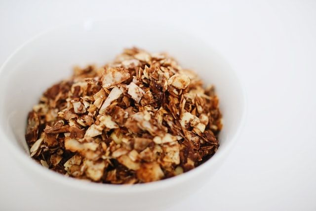

Granola
Préparation: 10 minutes
Cuisson: 21 minutes
Ingrédients
-
4 t de flocons d'avoine roulés à l'ancienne

-
1 t de pacanes
-
1/2 t de graines de citrouille
-
1/2 c. à thé de cannelle moulue
-
1/2 t d'huile de noix de coco
-
1/2 t de sirop d'érable
-
1 c. à thé d'extrait de vanille
-
2/3 t de canneberges séchés
Instructions
Je ne me rappelle plus de la source de cette recette pour les ingrédients.
Les instructions ont été générées par IA. À valider.
Mélanger les flocons d'avoine, les pacanes, les graines de citrouille et la cannelle moulue dans un grand bol.
- 4 t de flocons d'avoine roulés à l'ancienne
- 1 t de pacanes
- 1/2 t de graines de citrouille
- 1/2 c. à thé de cannelle moulue
Ajouter l'huile de noix de coco, le sirop d'érable et l'extrait de vanille, puis bien mélanger.
- 1/2 t de huile de noix de coco
- 1/2 t de sirop d'érable
- 1 c. à thé de extrait de vanille
Étendre le mélange sur une plaque de cuisson et cuire au four préchauffé à 350 degrés F pendant 21 minutes, en remuant à mi-cuisson.
Laisser refroidir complètement avant d'incorporer 2/3 t de canneberges séchés.